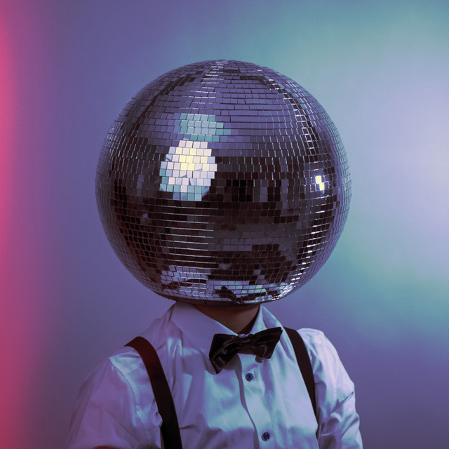

DIVE
this was my first time attempting to make a well-flowing and enjoyable playlist, rather than a couple albums mashed together. DIVE primarily focuses on j-pop, with some future funk and k-pop mixed in.